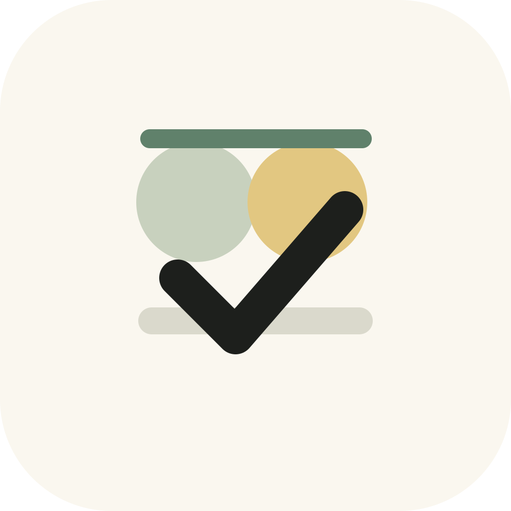
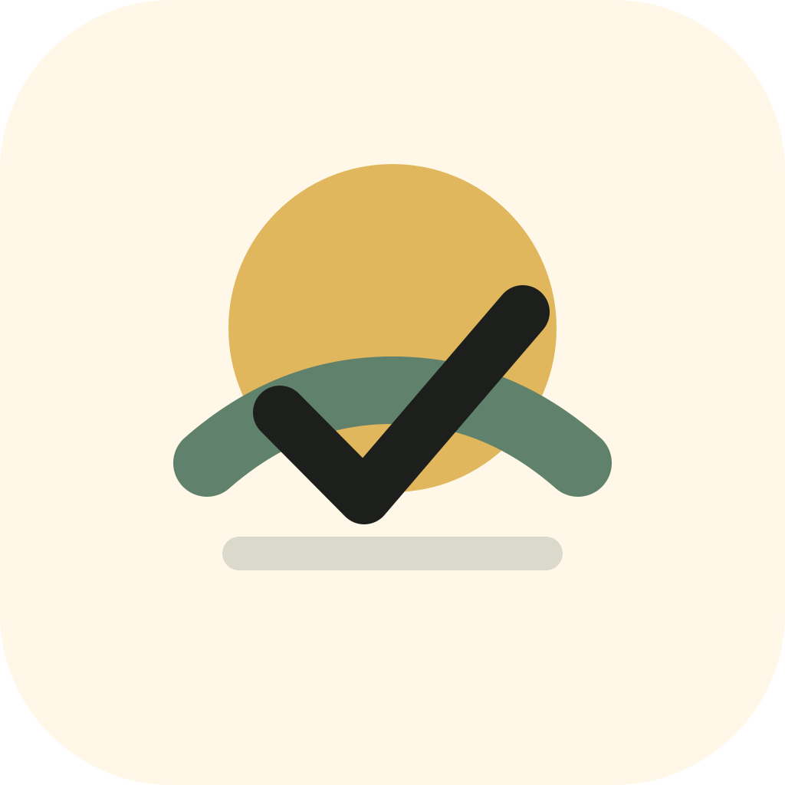
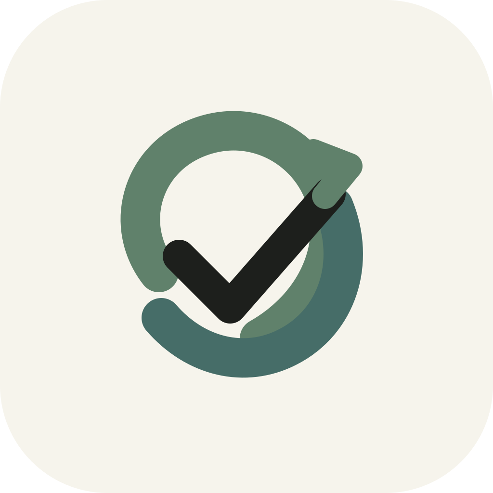
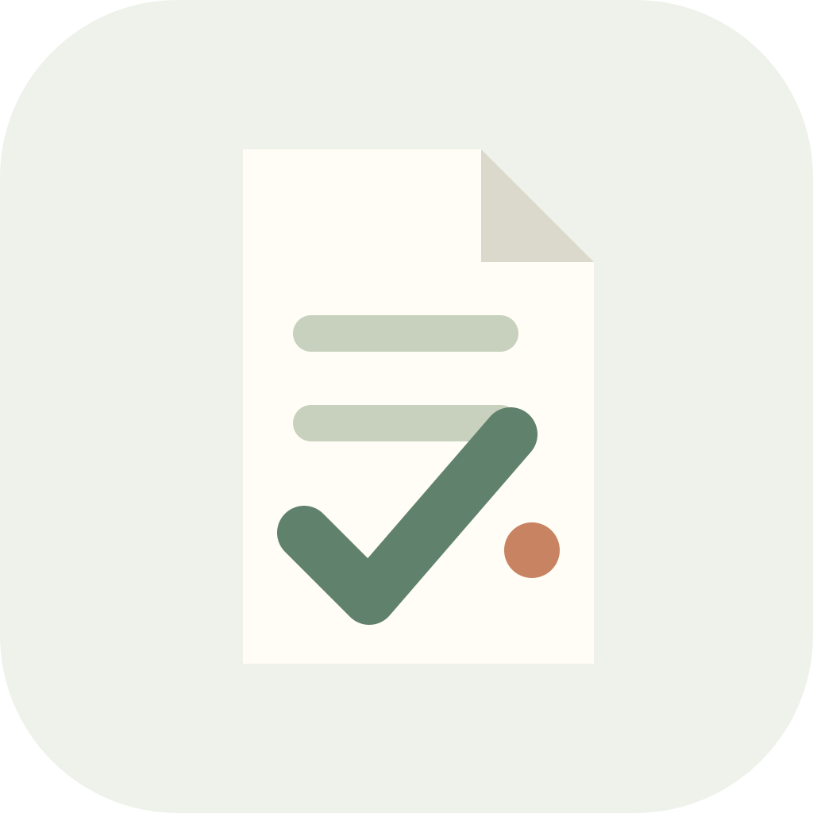
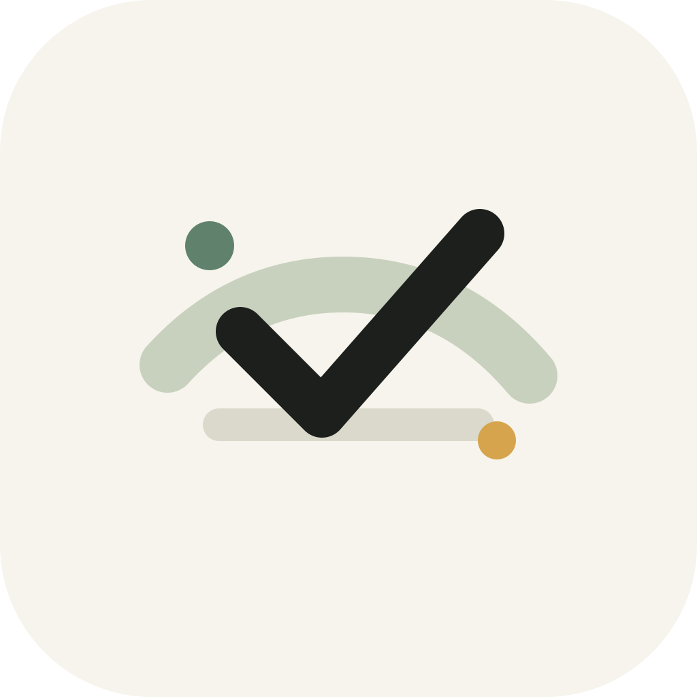

留白日
Liubai Day
最终方向：使用“日日清”的双日标记和清爽勾选，但名字保留更有留白感的「留白日」。
这个 app 的气质更像一张轻轻放在桌上的今日便签：不是强迫效率，而是把今天、固定日程和提醒收拢好。下面是 6 个命名与 logo 方向。

最终方向：使用“日日清”的双日标记和清爽勾选，但名字保留更有留白感的「留白日」。

强调“今天”和“轻负担”。太阳、地平线、勾选组合，适合更温暖的大众化方向。

把固定日程的“重复”做成叶形循环，也呼应现有鼠尾草绿。更成熟、偏精品工具。

把 app 变成“今天只看一页”。名字短，logo 可以自然承载清单、提醒、日程。

“安心办完”的缩写感强，适合做得更像个人助理。图形是稳定的地平线和完成勾。
更直给，表达每天清一清。双圆像两个日子，适合强调习惯和每日复盘。
最终选择：名字叫「留白日」，logo 使用「日日清」这组双日标记加完成勾的图形。这样既保留了“有事写下，没事留白”的气质，也让图标在桌面上更清楚、更像一个每日完成的小工具。